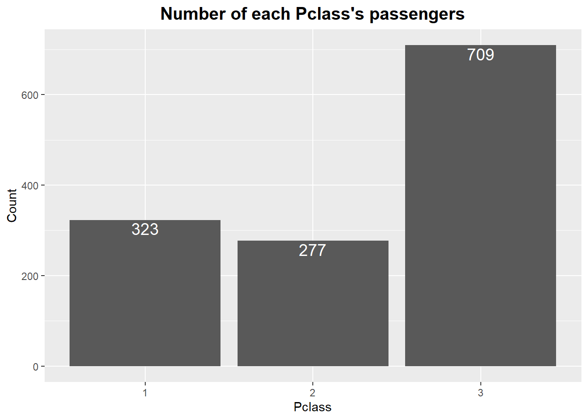
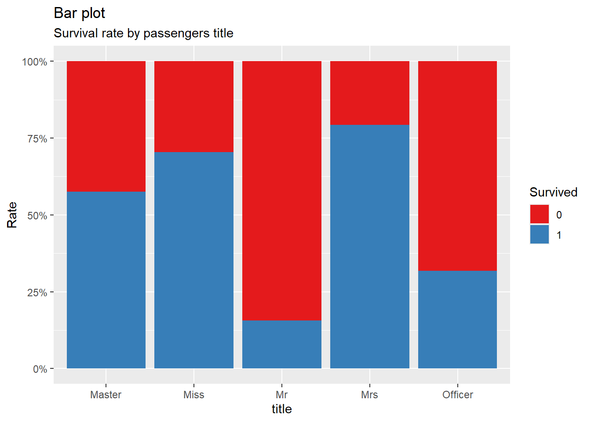

This chapter introduces descriptive statistics, which summarize and describe the main features of a dataset. Descriptive statistics are the foundation of exploratory data analysis (EDA) and are used to understand the basic structure and characteristics of data before moving on to more complex analysis.
We’ll explore measures of central tendency (mean, median, mode), measures of variability (variance, standard deviation, range, IQR), and distribution (skewness, kurtosis). In this chapter, we will also introduce some key R functions and simulate data to illustrate these concepts.
Table of Contents
Introduction to Descriptive Statistics
Generating Data for Simulation
Measures of Central Tendency
Measures of Variability
Visualizing Data Distribution
Skewness and Kurtosis
Summary Statistics Using R Functions
Exercises
1. Introduction to Descriptive Statistics
Descriptive statistics help summarize data by providing key insights into the data’s central tendency, spread, and overall shape of the distribution.
Central Tendency: Mean, median, and mode.
Variability: Variance, standard deviation, range, and interquartile range (IQR).
Distribution: Shape of the distribution including skewness and kurtosis.
2. Generating Data for Simulation
We’ll start by generating some synthetic data to demonstrate descriptive statistics using the rnorm() function to generate data from a normal distribution and runif() for a uniform distribution.
# Simulate normally distributed data (mean = 50, sd = 10)# About many types of distributions (normal, uniform, etc), we'll learn laterset.seed(123)data_normal <-rnorm(1000, mean =50, sd =10)# Simulate uniformly distributed data (min = 10, max = 90)data_uniform <-runif(1000, min =10, max =90)# Summary of the datasetssummary(data_normal)
Min. 1st Qu. Median Mean 3rd Qu. Max.
21.90 43.72 50.09 50.16 56.65 82.41
summary(data_uniform)
Min. 1st Qu. Median Mean 3rd Qu. Max.
10.28 28.68 49.72 49.89 69.67 89.97
# Histogram of normally distributed datalibrary(tidyverse)
── Attaching core tidyverse packages ──────────────────────── tidyverse 2.0.0 ──
✔ dplyr 1.1.4 ✔ readr 2.1.5
✔ forcats 1.0.0 ✔ stringr 1.5.1
✔ ggplot2 3.5.1 ✔ tibble 3.2.1
✔ lubridate 1.9.3 ✔ tidyr 1.3.1
✔ purrr 1.0.2
── Conflicts ────────────────────────────────────────── tidyverse_conflicts() ──
✖ dplyr::filter() masks stats::filter()
✖ dplyr::lag() masks stats::lag()
ℹ Use the conflicted package (<http://conflicted.r-lib.org/>) to force all conflicts to become errors
ggplot(data.frame(x = data_normal), aes(x)) +geom_histogram(bins =30, fill ="grey", alpha =0.9) +labs(title ="Histogram of Normally Distributed Data", x ="Value", y ="Frequency") +theme_minimal()
# Histogram of uniformly distributed dataggplot(data.frame(x = data_uniform), aes(x)) +geom_histogram(bins =30, fill ="grey", alpha =0.9) +labs(title ="Histogram of Uniformly Distributed Data", x ="Value", y ="Frequency") +theme_minimal()
3. Measures of Central Tendency
The central tendency refers to the “center” of a dataset. The most common measures of central tendency are the mean, median, and mode.
Mean: The arithmetic average of the data.
\[
\frac{\sum^{n}_{i=1}x_i}{n}
\]
Median: The middle value when the data is ordered.
Arrange the data in increasing order.
If the number of observations \(n\) is odd, the median is the value at position \(\frac{n + 1}{2}\).
If \(n\) is even, the median is the average of the values at positions \(\frac{n}{2}\) and \(\frac{n}{2} + 1\).
Mode: The value that occurs most frequently.
Moving Average: The moving average smooths out short-term fluctuations to highlight longer-term trends in a time series dataset. It is commonly used in time series analysis and forecasting.
Simple Moving Average (SMA): An unweighted average of the previous N data points (default).
Weighted Moving Average (WMA): Weights the data points, giving more importance to recent data.
Exponential Moving Average (EMA): Similar to WMA but the weighting factor decreases exponentially for older data points.
# Mean, median, and mode for normally distributed datamean_normal <-mean(data_normal)median_normal <-median(data_normal)mode_normal <-as.numeric(names(sort(table(data_normal), decreasing =TRUE)[1]))# Mean, median, and mode for uniformly distributed datamean_uniform <-mean(data_uniform)median_uniform <-median(data_uniform)mode_uniform <-as.numeric(names(sort(table(data_uniform), decreasing =TRUE)[1]))# Display resultscat("Normal Distribution - Mean:", mean_normal, "Median:", median_normal, "Mode:", mode_normal, "\n")
Normal Distribution - Mean: 50.16128 Median: 50.0921 Mode: 21.90225
cat("Uniform Distribution - Mean:", mean_uniform, "Median:", median_uniform, "Mode:", mode_uniform, "\n")
Uniform Distribution - Mean: 49.88829 Median: 49.717 Mode: 10.28128
4. Measures of Variability
Variability tells us how spread out the data points are. Common measures of variability include range, variance, standard deviation, and interquartile range (IQR).
Range: The difference between the maximum and minimum values.
Variance: The average squared deviation from the mean.
To understand the distribution of data, it is helpful to visualize it. We can use histograms and boxplots to explore the distribution of our datasets.
# Install ggplot2 if not already installedif (!require(ggplot2)) install.packages("ggplot2")library(ggplot2)# Histogram of normally distributed dataggplot(data.frame(x = data_normal), aes(x)) +geom_histogram(bins =30, fill ="blue", alpha =0.7) +labs(title ="Histogram of Normally Distributed Data", x ="Value", y ="Frequency") +theme_minimal()
# Boxplot of uniformly distributed dataggplot(data.frame(x = data_uniform), aes(y = x)) +geom_boxplot(fill ="green", alpha =0.7) +labs(title ="Boxplot of Uniformly Distributed Data", y ="Value") +theme_minimal()
6. Skewness and Kurtosis
Skewness measures the asymmetry of the distribution, while kurtosis measures the tailedness of the distribution.
Skewness: If skewness is near 0, the distribution is symmetrical. Positive skewness indicates a right-skewed distribution, while negative skewness indicates a left-skewed distribution.
We can use the moments package to calculate skewness and kurtosis.
# Install moments package if not already installedif (!require(moments)) install.packages("moments")
Loading required package: moments
library(moments)# Skewness and Kurtosis for Normal Dataskewness_normal <-skewness(data_normal)kurtosis_normal <-kurtosis(data_normal)# Skewness and Kurtosis for Uniform Dataskewness_uniform <-skewness(data_uniform)kurtosis_uniform <-kurtosis(data_uniform)# Display Resultscat("Normal Distribution - Skewness:", skewness_normal, "Kurtosis:", kurtosis_normal, "\n")
Normal Distribution - Skewness: 0.06529391 Kurtosis: 2.925747
cat("Uniform Distribution - Skewness:", skewness_uniform, "Kurtosis:", kurtosis_uniform, "\n")
Uniform Distribution - Skewness: -0.01377659 Kurtosis: 1.748754
# Plotting Histograms for Visual Representationpar(mfrow =c(1, 2)) # Plot side by side# Histogram for Normal Distributionhist(data_normal, breaks =30, col ="lightblue", main ="Normal Distribution",xlab ="Value", ylab ="Frequency", freq =TRUE)mtext(paste("Skewness:", round(skewness_normal, 2), "Kurtosis:", round(kurtosis_normal, 2)), side =3)# Histogram for Uniform Distributionhist(data_uniform, breaks =30, col ="lightgreen", main ="Uniform Distribution",xlab ="Value", ylab ="Frequency", freq =TRUE)mtext(paste("Skewness:", round(skewness_uniform, 2), "Kurtosis:", round(kurtosis_uniform, 2)), side =3)
par(mfrow =c(1, 1)) # Reset plot layout
library(moments)# Generate Normal dataset.seed(123)data_normal <-rnorm(1000, mean =0, sd =1)# Skewed Data (Cube Transformation)data_skewed <- data_normal^3# Data with High Kurtosis (Heavy Tails) - t-distributiondata_high_kurtosis <-rt(1000, df =3) # df = 3 gives heavier tails than normal# Skewness and Kurtosis Calculationsskewness_normal <-skewness(data_normal)kurtosis_normal <-kurtosis(data_normal)skewness_skewed <-skewness(data_skewed)kurtosis_skewed <-kurtosis(data_skewed)skewness_high_kurtosis <-skewness(data_high_kurtosis)kurtosis_high_kurtosis <-kurtosis(data_high_kurtosis)# Display Resultscat("Normal Distribution - Skewness:", skewness_normal, "Kurtosis:", kurtosis_normal, "\n")
Normal Distribution - Skewness: 0.06529391 Kurtosis: 2.925747
cat("Skewed Distribution - Skewness:", skewness_skewed, "Kurtosis:", kurtosis_skewed, "\n")
Skewed Distribution - Skewness: 1.187645 Kurtosis: 21.18439
cat("High Kurtosis Distribution - Skewness:", skewness_high_kurtosis, "Kurtosis:", kurtosis_high_kurtosis, "\n")
High Kurtosis Distribution - Skewness: 0.459809 Kurtosis: 9.387089
# Plotting Histograms for Visual Representationpar(mfrow =c(2, 2)) # Plot side by side# Histogram for Normal Distributionhist(data_normal, breaks =30, col ="lightblue", main ="Normal Distribution",xlab ="Value", ylab ="Frequency", freq =TRUE)mtext(paste("Skewness:", round(skewness_normal, 2), "Kurtosis:", round(kurtosis_normal, 2)), side =3)# Histogram for Skewed Distribution (Cubed)hist(data_skewed, breaks =30, col ="lightcoral", main ="Skewed Distribution",xlab ="Value", ylab ="Frequency", freq =TRUE)mtext(paste("Skewness:", round(skewness_skewed, 2), "Kurtosis:", round(kurtosis_skewed, 2)), side =3)# Histogram for High Kurtosis Distribution (t-distribution)hist(data_high_kurtosis, breaks =30, col ="lightgreen", main ="High Kurtosis Distribution",xlab ="Value", ylab ="Frequency", freq =TRUE)mtext(paste("Skewness:", round(skewness_high_kurtosis, 2), "Kurtosis:", round(kurtosis_high_kurtosis, 2)), side =3)par(mfrow =c(1, 1)) # Reset plot layout
7. Summary Statistics Using R Functions
R provides a convenient function, summary(), to calculate descriptive statistics such as the mean, median, minimum, maximum, and quartiles in one command.
# Summary statistics for normally distributed datasummary(data_normal)
Min. 1st Qu. Median Mean 3rd Qu. Max.
-2.80978 -0.62832 0.00921 0.01613 0.66460 3.24104
# Summary statistics for uniformly distributed datasummary(data_uniform)
Min. 1st Qu. Median Mean 3rd Qu. Max.
10.28 28.68 49.72 49.89 69.67 89.97
8. Exercises
Generate a dataset of 1000 observations from an exponential distribution (no worries, this is the next week content) with a rate parameter of 0.1. Calculate the mean, median, mode, variance, standard deviation, range, and IQR of the data.
Visualize the distribution of the exponential dataset using both a histogram and a boxplot.
Calculate the skewness and kurtosis of the exponential dataset.
Use the summary() function to summarize the key descriptive statistics of the exponential dataset.
Solutions for Exercises:
Exponential Distribution Simulation:
data_exp <-rexp(1000, rate =0.1)mean(data_exp)
[1] 10.11986
median(data_exp)
[1] 7.173714
# Mode not well-defined for continuous data, so skipped herevar(data_exp)
[1] 99.30837
sd(data_exp)
[1] 9.965359
range(data_exp)
[1] 0.01367483 76.23343926
IQR(data_exp)
[1] 11.38398
Visualization:
ggplot(data.frame(x = data_exp), aes(x)) +geom_histogram(bins =30, fill ="purple", alpha =0.7) +labs(title ="Histogram of Exponentially Distributed Data", x ="Value", y ="Frequency") +theme_minimal()
ggplot(data.frame(x = data_exp), aes(y = x)) +geom_boxplot(fill ="orange", alpha =0.7) +labs(title ="Boxplot of Exponentially Distributed Data", y ="Value") +theme_minimal()
Skewness and Kurtosis:
skewness(data_exp)
[1] 1.923678
kurtosis(data_exp)
[1] 8.24182
Summary:
summary(data_exp)
Min. 1st Qu. Median Mean 3rd Qu. Max.
0.01367 2.97068 7.17371 10.11986 14.35466 76.23344
Practice with a Titanic dataset
1. Introduction
It contains the analysis process of ‘Titanic’, one of the representative ‘Competition’ of ‘Kaggle’. The Titanic dataset is one of the most famous datasets used in data science and machine learning, often introduced in beginner-level courses due to its simplicity and well-documented historical context. It contains information about the passengers aboard the RMS Titanic, a British passenger liner that tragically sank after colliding with an iceberg on its maiden voyage from Southampton to New York City in April 1912. Of the 2,224 passengers and crew on board, more than 1,500 lost their lives, making it one of the deadliest peacetime maritime disasters in history. The dataset allows for analysis of the survival rate based on factors such as class, gender, and family size, reflecting real-world patterns of survival in this tragic event.
2. Prepare to work
2.1 Packages
This is the process of loading (loading) the Packages I used for analysis, in addition to the representative Packages of R, such as tidyverse (including ggplot2 and dplyr).
# Data input, assesment library(titanic)# library(readr) # Data input with readr::read_csv()library(descr) # descr::CrossTable() - Frequency by category, check with ratio figures# Visualizationlibrary(VIM) # Missing values assesment used by VIM::aggr()library(RColorBrewer) # Plot color settinglibrary(scales) # plot setting - x, y axis# Feature engineering, Data Pre-processinglibrary(tidyverse) # dplyr, ggplot2, purrr, etc.. # Feature Engineering & Data Pre-processinglibrary(ggpubr)# library(randomForest)# Model validation # library(caret) # caret::confusionMatrix()# library(ROCR) # Plotting ROC Curve
2.2 Raw data import
In titanic competition, train data used to create Model and test data used for actual prediction (estimation) are separated.
Here, we will load those two data and combine them into one. The reason for tying the separate data together is to work the same when feature engineering and pre-processing the input variables used in modeling.
Please see this link if you want to know about the story of Titanic.
The reason why rbind() was not used even when combining the two data into full is that Survived, the dependent variable (target variable, Y) of Titanic competition, does not exist in test. Therefore, the dimensions (dimension) of the two data do not match, so they are not merged with rbind(). However, if you use dplyr::bind_rows(), Survived in test is treated as NA and merged into one.
2.3 variable meaning explanation
variable name
Interpretation (meaning)
Type
PassengerID
Unique ID number that identifies the passenger
Int
Survived
Indicates whether or not the passenger survived. Survival is 1 and death is 0.
Factor
Pclass
The class of the cabin, with 3 categories from 1st class (1) to 3rd class (3).
Ord.Factor
Name
Passenger’s name
Factor
Sex
Passenger’s gender
Factor
Age
Age of passenger
Numeric
SibSp
Variable describing the number of siblings or spouses accompanying each passenger. It can range from 0 to 8.
Integer
Parch
Variable describing the number of parents or children accompanying each passenger, from 0 to 9.
Integer
Ticket
String variable for the ticket the passenger boarded
Factor
Fare
Variable for how much the passenger has paid for the trip so far
Numeric
Cabin
Variable that distinguishes each passenger’s cabin, with too many categories and missing values.
Factor
Embarked
Indicates the boarding port and departure port, and consists of three categories: C, Q, and S.
(C = Cherbourg, Q = Queenstown, S = Southampton).
Factor
2.4 Change the variables type
Before the full-scale EDA and feature engineering, let’s transform some variable properties. For example, Pclass is treated as numeric, but actually 1, 2, 3 are factors representing 1st, 2nd, and 3rd grades.
full <- full %>% dplyr::mutate(Survived =factor(Survived),Pclass =factor(Pclass, ordered = T),Name =factor(Name),Sex =factor(Sex),Ticket =factor(Ticket),Cabin =factor(Cabin),Embarked =factor(Embarked))
3. EDA : Exploratory data analysis
It is the process of exploring and understanding raw data, such as how data is structured and whether there are missing values or outliers in it.
We will use various functions and visualizations here.
3.1 Data confirmation using numerical values
First of all, let’s check the data through the output of various functions such as head() and summary().
3.1.1 head()
head(full, 10)
PassengerId Survived Pclass
1 1 0 3
2 2 1 1
3 3 1 3
4 4 1 1
5 5 0 3
6 6 0 3
7 7 0 1
8 8 0 3
9 9 1 3
10 10 1 2
Name Sex Age SibSp Parch
1 Braund, Mr. Owen Harris male 22 1 0
2 Cumings, Mrs. John Bradley (Florence Briggs Thayer) female 38 1 0
3 Heikkinen, Miss. Laina female 26 0 0
4 Futrelle, Mrs. Jacques Heath (Lily May Peel) female 35 1 0
5 Allen, Mr. William Henry male 35 0 0
6 Moran, Mr. James male NA 0 0
7 McCarthy, Mr. Timothy J male 54 0 0
8 Palsson, Master. Gosta Leonard male 2 3 1
9 Johnson, Mrs. Oscar W (Elisabeth Vilhelmina Berg) female 27 0 2
10 Nasser, Mrs. Nicholas (Adele Achem) female 14 1 0
Ticket Fare Cabin Embarked
1 A/5 21171 7.2500 S
2 PC 17599 71.2833 C85 C
3 STON/O2. 3101282 7.9250 S
4 113803 53.1000 C123 S
5 373450 8.0500 S
6 330877 8.4583 Q
7 17463 51.8625 E46 S
8 349909 21.0750 S
9 347742 11.1333 S
10 237736 30.0708 C
Looking at the result of head(), we can see that there is a missing value (NA) in Age.
If so, is there only Age missing in the entire data?
For the answer, please refer to 3.2 Missing values.
By combining the train and test data, the total number of observations (record, row, row) is 1309 (train: 891, test: 418), and the number of variables (column, feature, variable, column) is 12.
In addition, you can find out what the attributes of each variable are and how many categories there are for variables that are factor attributes.
In addition, in head(), it can be seen that the missing value (NA), which was thought to exist only in Age, also exists in other variables including Cabin.
3.1.3 summary()
summary(full)
PassengerId Survived Pclass Name
Min. : 1 0 :549 1:323 Connolly, Miss. Kate : 2
1st Qu.: 328 1 :342 2:277 Kelly, Mr. James : 2
Median : 655 NA's:418 3:709 Abbing, Mr. Anthony : 1
Mean : 655 Abbott, Master. Eugene Joseph : 1
3rd Qu.: 982 Abbott, Mr. Rossmore Edward : 1
Max. :1309 Abbott, Mrs. Stanton (Rosa Hunt): 1
(Other) :1301
Sex Age SibSp Parch Ticket
female:466 Min. : 0.17 Min. :0.0000 Min. :0.000 CA. 2343: 11
male :843 1st Qu.:21.00 1st Qu.:0.0000 1st Qu.:0.000 1601 : 8
Median :28.00 Median :0.0000 Median :0.000 CA 2144 : 8
Mean :29.88 Mean :0.4989 Mean :0.385 3101295 : 7
3rd Qu.:39.00 3rd Qu.:1.0000 3rd Qu.:0.000 347077 : 7
Max. :80.00 Max. :8.0000 Max. :9.000 347082 : 7
NA's :263 (Other) :1261
Fare Cabin Embarked
Min. : 0.000 :1014 : 2
1st Qu.: 7.896 C23 C25 C27 : 6 C:270
Median : 14.454 B57 B59 B63 B66: 5 Q:123
Mean : 33.295 G6 : 5 S:914
3rd Qu.: 31.275 B96 B98 : 4
Max. :512.329 C22 C26 : 4
NA's :1 (Other) : 271
summary() provides a lot of information about the data.
The representative values of quantitative variables (Integer, Numeric), the number of categories of categorical (Factor) variables, and the number of observations belonging to each category are all shown as numerical values.
Here are the things to check and move on:
Survived: This is the target variable for this competition, and 418 missing values are due to the test data.
Pclass: There are three categories of 1st class, 2nd class, and 3rd class, and 3rd class passengers are the most.
Name: There are people with similar names. So you can see that some passengers are traveling alone, while others are traveling with their families.
Sex: There are almost twice as many males as females.
Age: It ranges from 0.17 to 80 years old, but it seems necessary to check whether it is an outlier that incorrectly entered 17, and there are 263 missing values.
SibSp: From 0 to 8, and the 3rd quartile is 1, so it can be seen that you boarded the Titanic with a couple or siblings.
Parch: It ranges from 0 to 9, but the fact that the 3rd quartile is 0 indicates that there are very few passengers with parents and children.
Both SibSp and Parch are variables representing family relationships. Through this, we will find out the total number of people in the family, although we do not know who was on board, and based on that, we will create a categorical derived variable called FamilySized that represents the size of the family.
Ticket: Looking at the result of 3.1.2 str(), you can see that some passengers have exactly the same ticket, some passengers have tickets overlapping only a certain part, and some passengers have completely different tickets. We plan to use this to create a derived variable called ticket.size.
Fare: 0 to 512, with 1 missing value. I care that the 3rd quartile is 31.275 and the max is 512.
Cabin: It has the most (1014) missing values among a total of 12 features. It’s a variable that represents the ship’s area, but if there’s no way to use it, I think it should be discarded.
Embarked: It consists of a total of 3 categories, S is the most, and there are 2 missing values.
When performing a basic exploration of the data, please look at the outputs of various functions besides summary() and str() while comparing them.
3.2 Missing values
This is the process of checking which variables have missing values mentioned above and how many of them exist.
I’m going to check it numerically and visually at the same time using the dplyr, ggplot2, and VIM packages.
You don’t have to use all the code I’ve run, you can use only the parts you think you need or like as you read.
Variables sorted by number of missings:
Variable Count
Survived 418
Age 263
Fare 1
PassengerId 0
Pclass 0
Name 0
Sex 0
SibSp 0
Parch 0
Ticket 0
Cabin 0
Embarked 0
3.2.2 tidyverse packages
In addition to checking missing values at once using the VIM package, these are methods for checking missing values using various packages that exist in the tidyverse.
First, find the proportion of missing values for each variable with dplyr.
full %>% dplyr::summarize_all(funs(sum(is.na(.))/n()))
Warning: `funs()` was deprecated in dplyr 0.8.0.
ℹ Please use a list of either functions or lambdas:
# Simple named list: list(mean = mean, median = median)
# Auto named with `tibble::lst()`: tibble::lst(mean, median)
# Using lambdas list(~ mean(., trim = .2), ~ median(., na.rm = TRUE))
PassengerId Survived Pclass Name Sex Age SibSp Parch Ticket
1 0 0.3193277 0 0 0 0.2009167 0 0 0
Fare Cabin Embarked
1 0.0007639419 0 0
There is a way to check the proportion of missing values that exist in variables, but it can also be checked using visual data.
Please see the two bar plots below.
# Calculate the missing value ratio of each feature -> Data Frame property but has a structure of 1 row and 12 columns.missing_values <- full %>% dplyr::summarize_all(funs(sum(is.na(.))/n()))
Warning: `funs()` was deprecated in dplyr 0.8.0.
ℹ Please use a list of either functions or lambdas:
# Simple named list: list(mean = mean, median = median)
# Auto named with `tibble::lst()`: tibble::lst(mean, median)
# Using lambdas list(~ mean(., trim = .2), ~ median(., na.rm = TRUE))
missing_values %>% head
PassengerId Survived Pclass Name Sex Age SibSp Parch Ticket
1 0 0.3193277 0 0 0 0.2009167 0 0 0
Fare Cabin Embarked
1 0.0007639419 0 0
# Generate the missing_values obtained above as a 12X2 data framemissing_values <- tidyr::gather(missing_values,key ="feature", value ="missing_pct")missing_values %>%head(12)
feature missing_pct
1 PassengerId 0.0000000000
2 Survived 0.3193277311
3 Pclass 0.0000000000
4 Name 0.0000000000
5 Sex 0.0000000000
6 Age 0.2009167303
7 SibSp 0.0000000000
8 Parch 0.0000000000
9 Ticket 0.0000000000
10 Fare 0.0007639419
11 Cabin 0.0000000000
12 Embarked 0.0000000000
# Visualization with missing_valuesmissing_values %>%# Aesthetic setting : missing_pct 내림차순으로 정렬 ggplot(aes(x =reorder(feature, missing_pct), y = missing_pct)) +# Bar plot geom_bar(stat ="identity", fill ="red") +# Title generation ggtitle("Rate of missing values in each features") +# Title detail setting theme(plot.title =element_text(face ="bold", # 글씨체 hjust =0.5, # Horizon(가로비율) = 0.5size =15, color ="darkblue")) +# x, y axis label setting labs(x ="Feature names", y ="Rate") +# Plot의 x, y축 변환 coord_flip()
If you look at the bar graph above, you can check the percentage of missing values for all features.
However, what we are actually curious about is which variables have missing values and how many missing values exist in them.
Therefore, after calculating the proportion of missing values using the purrr package, I extracted only the variables that had at least one and visualized them.
# 변수별 결측치 비율 계산miss_pct <- purrr::map_dbl(full, function(x){round((sum(is.na(x))/length(x)) *100, 1) })# 결측치 비율이 0%보다 큰 변수들만 선택miss_pct <- miss_pct[miss_pct >0]# Data Frame 생성 data.frame(miss = miss_pct, var =names(miss_pct), row.names =NULL) %>%# Aesthetic setting : miss 내림차순으로 정렬 ggplot(aes(x =reorder(var, miss), y = miss)) +# Bar plot geom_bar(stat ='identity', fill ='red') +# Plot title setting ggtitle("Rate of missing values") +# Title detail setting theme(plot.title =element_text(face ="bold", # 글씨체 hjust =0.5, # Horizon(가로비율) = 0.5size =15, color ="darkblue")) +# x, y axis label setting labs(x ='Feature names', y ='Rate of missing values') +# Plot의 x, y축 변환 coord_flip()
Through this, only 4 variables out of a total of 12 variables have missing values (except Survived because it is due to test data), and there are many missing values in the order of Cabin, Age, Embarked, and Fare.
Now, it is the process of analyzing and exploring feature through visualization.
3.3 Age
age.p1 <- full %>%ggplot(aes(Age)) +geom_histogram(breaks =seq(0, 80, by =1), # interval setting col ="red", # bar border colorfill ="green", # bar inner coloralpha = .5) +# Bar Transparency = 50%# Plot titleggtitle("All Titanic passengers age hitogram") +theme(plot.title =element_text(face ="bold", hjust =0.5, # Horizon (horizontal ratio) = 0.5size =15, color ="darkblue"))age.p2 <- full %>%# Exclude values where Survived == NA in the test dataset filter(!is.na(Survived)) %>%ggplot(aes(Age, fill = Survived)) +geom_density(alpha = .5) +ggtitle("Titanic passengers age density plot") +theme(plot.title =element_text(face ="bold", hjust =0.5,size =15, color ="darkblue"))# Display the two graphs created above on one screenggarrange(age.p1, age.p2, ncol=2)
3.4 Pclass
Let’s visualize the frequency of passengers for each Pclass.
After grouping (grouping) by Pclass using dplyr package, Data Frame representing frequency by category was created and visualized with ggplot.
full %>%# Get Pclass frequencies using dplyr::group_by(), summarize()group_by(Pclass) %>%summarize(N =n()) %>%# Aesthetic setting ggplot(aes(Pclass, N)) +geom_col() +geom_text(aes(label = N), size =5, vjust =1.2, color ="#FFFFFF") +# Plot title ggtitle("Number of each Pclass's passengers") +# Title setting theme(plot.title =element_text(face ="bold", hjust =0.5, size =15)) +# x, y axis name change labs(x ="Pclass", y ="Count")

It can be seen that the largest number of passengers boarded in the 3-class cabin.
3.5 Fare
This is a visualization of the ‘Fare’ variable, which represents the amount paid by the passenger.
Two histograms and boxplots were used.
# Histogram Fare.p1 <- full %>%ggplot(aes(Fare)) +geom_histogram(col ="yellow",fill ="blue", alpha = .5) +ggtitle("Histogram of passengers Fare") +theme(plot.title =element_text(face ="bold", hjust =0.5, size =15))# Boxplot Fare.p2 <- full %>%filter(!is.na(Survived)) %>%ggplot(aes(Survived, Fare)) +# Observations are drawn as gray dots, but overlapping areas are spread out. geom_jitter(col ="gray") +# Boxplot: 50% transparencygeom_boxplot(alpha = .5) +ggtitle("Boxplot of passengers Fare") +theme(plot.title =element_text(face ="bold", hjust =0.5, size =15))ggarrange(Fare.p1, Fare.p2, ncol=2)
You can see that the survivors have a higher ‘Fare’ than the deceased passengers, but not by much.
3.6 Sex
Are there differences in survival rates between men and women? See the plot below.
sex.p1 <- full %>% dplyr::group_by(Sex) %>%summarize(N =n()) %>%ggplot(aes(Sex, N)) +geom_col() +geom_text(aes(label = N), size =5, vjust =1.2, color ="#FFFFFF") +ggtitle("Bar plot of Sex") +labs(x ="Sex", y ="Count")sex.p2 <- full[1:891, ] %>%ggplot(aes(Sex, fill = Survived)) +geom_bar(position ="fill") +scale_fill_brewer(palette ="Set1") +scale_y_continuous(labels = percent) +ggtitle("Survival Rate by Sex") +labs(x ="Sex", y ="Rate")ggarrange(sex.p1, sex.p2, ncol =2)
mosaicplot(Survived ~ Sex,data = full[1:891, ], col =TRUE,main ="Survival rate by passengers gender")
If you interpret the graph, you can see that the survival rate is higher for female passengers, while there are far more males than females.
4. Feature engineering & Data Pre-processing
This is the process of filling in missing values (‘NA’) based on the contents of ‘Chapter 3 EDA’ and creating derived variables at the same time.
4.1 Age -> Age.Group
full <- full %>%# The missing value (NA) is filled in first, and the average of the values excluding the missing value is filled.mutate(Age =ifelse(is.na(Age), mean(full$Age, na.rm =TRUE), Age),# Create a categorical derived variable Age.Group based on Age valuesAge.Group =case_when(Age <13~"Age.0012", Age >=13& Age <18~"Age.1317", Age >=18& Age <60~"Age.1859", Age >=60~"Age.60inf"),# Convert Chr attribute to FactorAge.Group =factor(Age.Group))
4.3 SibSp & Parch -> FamilySized
full <- full %>%# First create a derived variable called FamilySize by adding SibSp, Parch and 1 (self)mutate(FamilySize = .$SibSp + .$Parch +1,# Create a categorical derived variable FamilySized according to the value of FamilySizeFamilySized = dplyr::case_when(FamilySize ==1~"Single", FamilySize >=2& FamilySize <5~"Small", FamilySize >=5~"Big"),# Convert the Chr property FamilySized to a factor# Assign new levels according to the size of the group sizeFamilySized =factor(FamilySized, levels =c("Single", "Small", "Big")))
Ceated FamilySized using SibSp and Parch.
Reducing these two variables to one has the advantage of simplifying the model.
A similar use case is to combine height and weight into a BMI index.
4.4 Name & Sex -> title
When looking at the results of ‘Chapter 3.6 Sex’, it was confirmed that the survival rate of women was higher than that of men.
Therefore, in Name, “Wouldn’t it be useful to extract only names related to gender and categorize them?” I think it is.
First, extract only the column vector named Name from full data and save it as title.
# First, extract only the Name column vector and store it in the title vectortitle <- full$Nametitle %>%head(20)
[1] Braund, Mr. Owen Harris
[2] Cumings, Mrs. John Bradley (Florence Briggs Thayer)
[3] Heikkinen, Miss. Laina
[4] Futrelle, Mrs. Jacques Heath (Lily May Peel)
[5] Allen, Mr. William Henry
[6] Moran, Mr. James
[7] McCarthy, Mr. Timothy J
[8] Palsson, Master. Gosta Leonard
[9] Johnson, Mrs. Oscar W (Elisabeth Vilhelmina Berg)
[10] Nasser, Mrs. Nicholas (Adele Achem)
[11] Sandstrom, Miss. Marguerite Rut
[12] Bonnell, Miss. Elizabeth
[13] Saundercock, Mr. William Henry
[14] Andersson, Mr. Anders Johan
[15] Vestrom, Miss. Hulda Amanda Adolfina
[16] Hewlett, Mrs. (Mary D Kingcome)
[17] Rice, Master. Eugene
[18] Williams, Mr. Charles Eugene
[19] Vander Planke, Mrs. Julius (Emelia Maria Vandemoortele)
[20] Masselmani, Mrs. Fatima
1307 Levels: Abbing, Mr. Anthony ... Zimmerman, Mr. Leo
# Using regular expression and gsub(), extract only names that are highly related to gender and save them as title vectorstitle <-gsub("^.*, (.*?)\\..*$", "\\1", title)title %>%head(20)
gsub("^.*, (.*?)\\..*$", "\\1", title) In short, this code uses gsub to search for and replace a pattern in the title string, where the pattern is defined by the regular expression "^.*, (.*?)\\..*$" and the replacement is defined by the string "\\1". If you want to understand more about regular expression. Please see my blog post: What are Regular Expressions and How to Use Them in R
You can see that there are 18 categories in total.
If you use this derived variable called ‘title’ as it is, the complexity of the model (especially the tree based model) increases considerably, so you need to reduce the category.
Before that, let’s check the frequency and rate for each category using the descr package.
# Check frequency, ratio by categorydescr::CrossTable(full$title)
The frequencies and proportions of the 18 categories are very different.
So let’s narrow these down to a total of five categories.
# Simplify into 5 categoriesfull <- full %>%# If you use "==" instead of "%in%", it won't work as you want because of Recyling Rule.mutate(title =ifelse(title %in%c("Mlle", "Ms", "Lady", "Dona"), "Miss", title),title =ifelse(title =="Mme", "Mrs", title),title =ifelse(title %in%c("Capt", "Col", "Major", "Dr", "Rev", "Don","Sir", "the Countess", "Jonkheer"), "Officer", title),title =factor(title))# After creating the derived variable, check the frequency and ratio for each categorydescr::CrossTable(full$title)
As we saw in Chapter 3.1.3 Summary(), the number of passengers (train and test together) is 1309. However, all passengers’ tickets are not different.
See the results of summary() and unique() below.
# We used length() to get only the number of unique categories.length(unique(full$Ticket))
[1] 929
# Printing all of them was too messy, so only 10 were printed.head(summary(full$Ticket), 10)
CA. 2343 1601 CA 2144 3101295 347077 347082
11 8 8 7 7 7
PC 17608 S.O.C. 14879 113781 19950
7 7 6 6
Why are there 929 unique tickets when there are no missing values in feature?
Even the ticket is CA. There are 11 exactly the same number of people as 2343.
Let’s see who the passengers are.
# Filter only 11 passengers with matching tickets# We don't need to check for all variables, so we only want to look at the variables below.full %>%filter(Ticket =="CA. 2343") %>% dplyr::select(Pclass, Name, Age, FamilySized)
Pclass Name Age FamilySized
1 3 Sage, Master. Thomas Henry 29.88114 Big
2 3 Sage, Miss. Constance Gladys 29.88114 Big
3 3 Sage, Mr. Frederick 29.88114 Big
4 3 Sage, Mr. George John Jr 29.88114 Big
5 3 Sage, Miss. Stella Anna 29.88114 Big
6 3 Sage, Mr. Douglas Bullen 29.88114 Big
7 3 Sage, Miss. Dorothy Edith "Dolly" 29.88114 Big
8 3 Sage, Miss. Ada 29.88114 Big
9 3 Sage, Mr. John George 29.88114 Big
10 3 Sage, Master. William Henry 14.50000 Big
11 3 Sage, Mrs. John (Annie Bullen) 29.88114 Big
You can see that the 11 passengers above are all from the same family, brothers.
While there are passengers whose tickets are exactly the same, there are also passengers whose tickets are partially matched.
Create a ticket.unique derived variable that represents the number of unique numbers (number of characters) of such a ticket.
Let’s create a derived variable ticket.size with 3 categories based on ticket.unique.
# First of all, ticket.unique is saved as all 0ticket.unique <-rep(0, nrow(full))# Extract only the unique ones from ticket features and store them in the tickets vectortickets <-unique(full$Ticket)# After extracting only passengers with the same ticket by using overlapping loops, extract and store the length (number of characters) of each ticket.for (i in1:length(tickets)) { current.ticket <- tickets[i] party.indexes <-which(full$Ticket == current.ticket)# For loop 중첩 for (k in1:length(party.indexes)) { ticket.unique[party.indexes[k]] <-length(party.indexes) } }# Save ticket.unique calculated above as a derived variablefull$ticket.unique <- ticket.unique# Create ticket.size variable by dividing it into three categories according to ticket.uniquefull <- full %>%mutate(ticket.size =case_when(ticket.unique ==1~'Single', ticket.unique <5& ticket.unique >=2~"Small", ticket.unique >=5~"Big"),ticket.size =factor(ticket.size,levels =c("Single", "Small", "Big")))
4.6 Embarked
This is feature with two missing values (NA). In the case of Embarked, replace it with S, which is the most frequent value among the three categories.
full$Embarked <-replace(full$Embarked, # Specify Data$feature to replacewhich(is.na(full$Embarked)), # Find only missing values'S') # specify the value to replace
4.7 Fare
For Fare, there was only one missing value.
Based on the histogram seen above (Chapter 3.5 Fare), missing values are replaced with 0.
The following is the process of selecting the variables to be used for model creation while exploring the derived variables created so far.
In other words, Feature selection.
5. Relationship to target feature Survived & Feature selection
Prior to full-scale visualization, since the purpose here is to see how well each variable correlates with the survival rate, we did not use the entire full data, but only the train data set that can determine survival and death.
Also, please note that the plot used above may be duplicated as it is.
Data set split
First, use the code below to split preprocessed full data into train and test.
# Before feature selection, select all variables first.train <- full[1:891, ]test <- full[892:1309, ]
`summarise()` has grouped output by 'Sex'. You can override using the `.groups`
argument.
gender_ratio
# A tibble: 4 × 4
# Groups: Sex [2]
Sex Survived Count Percentage
<fct> <fct> <int> <dbl>
1 female 0 81 26
2 female 1 233 74
3 male 0 468 81
4 male 1 109 19
Visualization
train %>%ggplot() +geom_bar(aes(x = Sex, fill = Survived)) +geom_text(data = gender, aes(x = Sex, y = n, label = n), position =position_dodge(width=0.9), vjust=-0.25, fontface ="bold") +geom_label(data = gender_ratio, aes(x = Sex, y = Count, label =paste0(Percentage, "%"), group = Survived), position =position_stack(vjust =0.5)) +theme_bw() +theme(plot.title =element_text(hjust =0.5, size=18, color ="#054354")) +ggtitle("Titanic Gender Survival Rate") +scale_x_discrete(name="Gender") +scale_y_continuous(name ="Passenger Count") +scale_fill_discrete(name ="Outcome", labels =c("Did Not Survive", "Survived"))
5.2 Pclass
train %>%ggplot(aes(Pclass, fill = Survived)) +geom_bar(position ="fill") +# Set plot theme: Converts to a more vivid color.scale_fill_brewer(palette ="Set1") +# Y axis setting scale_y_continuous(labels = percent) +# Set x, y axis names and plot main title, sub titlelabs(x ="Pclass", y ="Rate",title ="Bar plot", subtitle ="How many people survived in each Pclass?")
# Using facet_wrap(~ Pclass)train %>%ggplot() +geom_bar(aes(x = Sex, fill = Survived)) +facet_wrap(~ Pclass) +geom_text(data = pclass_gender_ratio, aes(x = Sex, y = Count, label = Count), position =position_dodge(width=0.9), vjust=-1.5, fontface ="bold") +geom_label(data = pclass_gender_survived_ratio, aes(x = Sex, y = Count, label =paste0(Percentage, "%"), group = Survived), position =position_stack(vjust =0.5)) +theme_bw() +theme(plot.title =element_text(hjust =0.5, size=18, color ="#054354")) +ggtitle("Titanic Gender Survival Rate by Pclass") +scale_x_discrete(name="Gender by Pclass ") +scale_y_continuous(name ="Passenger Count", limits =c(0,360)) +scale_fill_discrete(name ="Outcome", labels =c("Did Not Survive", "Survived"))
5.3 Embarked
train %>%ggplot(aes(Embarked, fill = Survived)) +geom_bar(position ="fill") +scale_fill_brewer(palette ="Set1") +scale_y_continuous(labels = percent) +labs(x ="Embarked", y ="Rate",title ="Bar plot", subtitle ="How many people survived in each Embarked?")
5.4 FamilySized
train %>%ggplot(aes(FamilySized, fill = Survived)) +geom_bar(position ="fill") +scale_fill_brewer(palette ="Set1") +scale_y_continuous(labels = percent) +labs(x ="FamilySized", y ="Rate",title ="Bar plot", subtitle ="Survival rate by FamilySized")
It can be seen that there is a difference in survival rate depending on the number of people on board, and that ‘FamilySized’ and ‘Survived’ have a non-linear relationship.
5.5 Age.Group
train %>%ggplot(aes(Age.Group, fill = Survived)) +geom_bar(position ="fill") +scale_fill_brewer(palette ="Set1") +scale_y_continuous(labels = percent) +labs(x ="Age group", y ="Rate",title ="Bar plot", subtitle ="Survival rate by Age group")
Age distribution & Survival rate
train %>%ggplot() +geom_histogram(aes(x = Age), binwidth =5, color ="#355a63", fill ="#96e4f7") +theme_bw() +theme(plot.title =element_text(hjust =0.5, size=18, color ="#054354")) +ggtitle("Titanic Age Distribution") +scale_x_continuous(name="Passenger Age", breaks =5*c(0:18)) +scale_y_continuous(name ="Passenger Count")
train %>%ggplot() +geom_histogram(aes(x = Age, fill = Survived), binwidth =5, color ="#355a63") +theme_bw() +theme(plot.title =element_text(hjust =0.5, size=18, color ="#054354")) +ggtitle("Titanic Survival Rate by Age") +scale_x_continuous(name="Passenger Age", breaks =5*c(0:18)) +scale_y_continuous(name ="Passenger Count") +scale_fill_discrete(name ="Outcome", labels =c("Did Not Survive", "Survived"))
5.6 title
train %>%ggplot(aes(title, fill = Survived)) +geom_bar(position ="fill") +scale_fill_brewer(palette ="Set1") +scale_y_continuous(labels = percent) +labs(x ="title", y ="Rate",title ="Bar plot", subtitle ="Survival rate by passengers title")

5.7 ticket.size
train %>%ggplot(aes(ticket.size, fill = Survived)) +geom_bar(position ="fill") +scale_fill_brewer(palette ="Set1") +scale_y_continuous(labels = percent) +labs(x ="ticket.size", y ="Rate",title ="Bar plot", subtitle ="Survival rate by ticket.size")
Survival Rate based on Gender and Class Segmented by Age
train %>%ggplot() +geom_histogram(aes(x = Age, fill = Survived), binwidth =5, color ="#355a63") +facet_grid(Sex ~ Pclass) +theme_bw() +theme(plot.title =element_text(hjust =0.5, size=18, color ="#054354")) +ggtitle("Titanic Survival Rate by Age, Gender and Class") +scale_x_continuous(name="Passenger Age", breaks =10*c(0:8)) +scale_y_continuous(name ="Passenger Count") +scale_fill_discrete(name ="Outcome", labels =c("Did Not Survive", "Survived"))
Survival Rate based on Gender Class Age & Family Size!!
train %>%ggplot() +geom_point(aes(x = Age, y = FamilySize, color = Survived), alpha =0.7) +facet_grid(Sex ~ Pclass) +theme_bw() +theme(plot.title =element_text(size=18, color ="#054354")) +ggtitle("Survival Rate by Gender, Class, Age, and Family Size") +scale_x_continuous(name="Passenger Age", breaks =10*c(0:8)) +scale_y_continuous(name ="Family Size") +scale_color_discrete(name ="Outcome", labels =c("Did Not Survive", "Survived"))
5.8 Description of actual used features
Now that all the derived variables created so far have been found to be useful, select and save only the variables you will actually use.
The table below is a brief description of the actual selected variables.
variable name
Type
Description
Survived
factor
Target feature, survival == 1, death == 0
Sex
factor
gender, male or female
Pclass
factor
Cabin Class, First Class (1), Second Class (2), Third Class (3)
Embarked
factor
Port of embarkation, Southampton (S), Cherbourg (C), Queenstown (Q)
FamilySized
factor
Family size, a derived variable created using SibSp and Parch, with 3 categories
Age.Group
factor
Age group, a derived variable created using Age, with 4 categories
title
factor
A part of the name, a derived variable made using Name, and 5 categories
ticket.size
factor
The length of the unique part of the ticket, a derived variable created using ticket, with 3 categories
# Excluding ID number, select and save 7 input variables and 1 target variable to actually use# library(dplyr)train <- train %>% dplyr::select(Pclass, Sex, Embarked, FamilySized, Age.Group, title, ticket.size, Survived)# For Submit, extract the Id column vector and store it in IDID <- test$PassengerId# Select and save the remaining 6 variables except for Id and Survived# test <- test %>% # dplyr::select("Pclass", "Sex", "Embarked", "FamilySized",# "Age.Group", "title", "ticket.size", "Survived")test <- train %>%sample_frac(.3)
6. Machine learning model generation
Now is the time to create a machine learning model using the train data set.
Originally, it is correct to create train, validation, test data sets first, create various models, and then select the final model through cross validation (CV, Cross Validation), but these processes are omitted here and RandomForest After creating only, we will predict (estimate) the test data and even create data to Submit to competition.
6.1 Model Training and Comparison of Classification Algorithms
In this section, we will train and compare six different classification models: Logistic Regression, Random Forest, Support Vector Machines (SVM), k-Nearest Neighbors (k-NN), Gradient Boosting, and Naive Bayes. We will assess their performance using accuracy and other evaluation metrics.
The following object is masked from 'package:purrr':
lift
if (!require(e1071)) install.packages("e1071") # Required for SVM
Loading required package: e1071
Attaching package: 'e1071'
The following objects are masked from 'package:moments':
kurtosis, moment, skewness
if (!require(gbm)) install.packages("gbm") # Required for Gradient Boosting
Loading required package: gbm
Loaded gbm 2.2.2
This version of gbm is no longer under development. Consider transitioning to gbm3, https://github.com/gbm-developers/gbm3
if (!require(nnet)) install.packages("nnet") # Required for Neural Networks
Loading required package: nnet
if (!require(xgboost)) install.packages("xgboost") # Required for XGBoost
Loading required package: xgboost
Attaching package: 'xgboost'
The following object is masked from 'package:dplyr':
slice
library(caret)library(e1071) # For SVMlibrary(gbm) # For Gradient Boostinglibrary(nnet) # For Neural Networkslibrary(xgboost) # For XGBoost# Set seed for reproducibilityset.seed(1901)# Adjusted trainControl with no resampling (faster)train_control <-trainControl(method ="none") # No cross-validation for faster training# Define specific hyperparameters for models that require them (only one combination)tune_grids <-list(rf =data.frame(.mtry =2), # Random ForestsvmLinear =data.frame(.C =1), # SVMknn =data.frame(.k =5), # k-NNgbm =data.frame(.n.trees =100, .interaction.depth =3, .shrinkage =0.1, .n.minobsinnode =10), # GBMrpart =data.frame(.cp =0.01), # Decision TreexgbTree =expand.grid(nrounds =50, # Number of boosting roundsmax_depth =3, # Maximum depth of a treeeta =0.1, # Learning rategamma =0, # Minimum loss reductioncolsample_bytree =0.8, # Subsample ratio of columns when constructing each treemin_child_weight =1, # Minimum sum of instance weight needed in a childsubsample =0.8# Subsample ratio of the training instance ),nnet =data.frame(.size =5, .decay =0.1) # Neural Networks)# List of models and corresponding tuning gridsmodel_list <-c("glm", "rf", "svmLinear", "knn", "gbm", "rpart", "xgbTree", "nnet")tune_list <-list(NULL, tune_grids$rf, tune_grids$svmLinear, tune_grids$knn, tune_grids$gbm, tune_grids$rpart, tune_grids$xgbTree, tune_grids$nnet)# Create a list to store the resultsmodel_results <-list()# Train models using caret with adjusted trainControlfor (i inseq_along(model_list)) {if (!is.null(tune_list[[i]])) { model_results[[model_list[i]]] <-train(Survived ~ ., data = train, method = model_list[i], trControl = train_control, tuneGrid = tune_list[[i]]) # Use tuneGrid for models that need it } else { model_results[[model_list[i]]] <-train(Survived ~ ., data = train, method = model_list[i], trControl = train_control) # No tuneGrid needed for others }}
Iter TrainDeviance ValidDeviance StepSize Improve
1 1.2534 nan 0.1000 0.0354
2 1.1859 nan 0.1000 0.0305
3 1.1343 nan 0.1000 0.0221
4 1.0915 nan 0.1000 0.0209
5 1.0551 nan 0.1000 0.0177
6 1.0247 nan 0.1000 0.0147
7 1.0010 nan 0.1000 0.0114
8 0.9827 nan 0.1000 0.0071
9 0.9643 nan 0.1000 0.0091
10 0.9455 nan 0.1000 0.0078
20 0.8451 nan 0.1000 0.0029
40 0.7909 nan 0.1000 -0.0016
60 0.7701 nan 0.1000 -0.0017
80 0.7577 nan 0.1000 -0.0011
100 0.7482 nan 0.1000 -0.0024
# weights: 96
initial value 763.991668
iter 10 value 393.020713
iter 20 value 358.714308
iter 30 value 347.478185
iter 40 value 339.902208
iter 50 value 338.245261
iter 60 value 337.165832
iter 70 value 334.824535
iter 80 value 331.374517
iter 90 value 330.425148
iter 100 value 329.866794
final value 329.866794
stopped after 100 iterations
# Predict on the test set for each modelpredictions <-lapply(model_results, predict, newdata = test)# Convert predictions to factor if neededpredictions <-lapply(predictions, function(pred) as.factor(pred))# Assign predictions to individual variables for easy access if neededpred.logit <- predictions[["glm"]]pred.rf <- predictions[["rf"]]pred.svm <- predictions[["svmLinear"]]pred.knn <- predictions[["knn"]]pred.gbm <- predictions[["gbm"]]pred.rpart <- predictions[["rpart"]]pred.xgbTree <- predictions[["xgbTree"]]pred.nnet <- predictions[["nnet"]]# Optionally, print the models to see their configurationsprint(model_results)
$glm
Generalized Linear Model
891 samples
7 predictor
2 classes: '0', '1'
No pre-processing
Resampling: None
$rf
Random Forest
891 samples
7 predictor
2 classes: '0', '1'
No pre-processing
Resampling: None
$svmLinear
Support Vector Machines with Linear Kernel
891 samples
7 predictor
2 classes: '0', '1'
No pre-processing
Resampling: None
$knn
k-Nearest Neighbors
891 samples
7 predictor
2 classes: '0', '1'
No pre-processing
Resampling: None
$gbm
Stochastic Gradient Boosting
891 samples
7 predictor
2 classes: '0', '1'
No pre-processing
Resampling: None
$rpart
CART
891 samples
7 predictor
2 classes: '0', '1'
No pre-processing
Resampling: None
$xgbTree
eXtreme Gradient Boosting
891 samples
7 predictor
2 classes: '0', '1'
No pre-processing
Resampling: None
$nnet
Neural Network
891 samples
7 predictor
2 classes: '0', '1'
No pre-processing
Resampling: None
6.2 Evaluation of Model Performance
Now, we will compare the performance of each model using accuracy and other classification metrics such as precision, recall, and F1-score. We’ll use a confusion matrix for each model.
# A tibble: 8 × 2
Model Accuracy
<chr> <dbl>
1 k-NN 0.861
2 Neural Networks 0.850
3 GBM 0.846
4 XGBoost 0.843
5 Random Forest 0.828
6 SVM 0.824
7 Logistic Regression 0.820
8 Decision Tree 0.820
Beyond Accuracy
In a binary classification problem, a confusion matrix consists of four categories:
Positive (Actual)
Negative (Actual)
Positive (Predicted)
True Positive (TP)
False Positive (FP)
Negative (Predicted)
False Negative (FN)
True Negative (TN)
True Positive (TP): Number of (actual) positive cases that are correctly (True) classified
False Positive (FP): Number of (actual) negative cases that are incorrectly classified as (predicted) positive
True Negative (TN): Number of (actual) negative cases that are correctly classified
False Negative (FN): Number of (actual) positive cases that are incorrectly classified as (predicted) negative
Precision & Recall
The precision of the model tells us how many of the positive cases that the model predicted were actually positive,
The accuracy of the positive predictions made by the model
\[
\frac{TP}{TP+FP}
\]
while the recall tells us how many of the actual positive cases were correctly predicted by the model.
The ability of the model to correctly identify all positive instances
\[
\frac{TP}{TP+FN}
\]
In general, precision is more important when we want to avoid false positives. For example, in a spam classification task, we would want to have high precision to ensure that legitimate emails are not classified as spam. False positives can be costly and can lead to important messages being missed.
On the other hand, recall is more important when we want to avoid false negatives. For example, in a medical diagnosis task, we would want to have high recall to ensure that all instances of a disease are correctly identified, even if it means that some healthy individuals are identified as having the disease. False negatives can be costly and can lead to delayed treatment and potentially life-threatening consequences.
What is F1 score?
F1 score is a measure of a machine learning algorithm’s accuracy that combines precision and recall. It is the harmonic mean of precision and recall, and ranges from 0 to 1, with higher values indicating better performance.
F1 score is calculated using the following formula:
where precision is the number of true positives divided by the total number of positive predictions, and recall is the number of true positives divided by the total number of actual positives.
Why use F1 score?
F1 score is useful when the dataset is imbalanced, meaning that the number of positive and negative examples is not equal. In such cases, accuracy alone is not a good measure of the algorithm’s performance, as a high accuracy can be achieved by simply predicting the majority class all the time.
Instead, we need a metric that takes into account both precision and recall, as precision measures the algorithm’s ability to make correct positive predictions, and recall measures the algorithm’s ability to find all positive examples in the dataset.
How to interpret F1 score?
F1 score ranges from 0 to 1, with higher values indicating better performance. An F1 score of 1 means perfect precision and recall, while an F1 score of 0 means that either the precision or recall is 0.
In practice, we aim to achieve a high F1 score while balancing precision and recall based on the problem and its requirements. For example, in medical diagnosis, we may want to prioritize recall over precision to avoid missing any positive cases, while in fraud detection, we may want to prioritize precision over recall to avoid false positives.